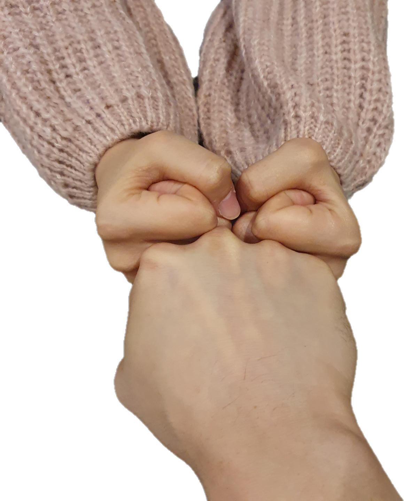

- 챕터1
- 챕터2
- 챕터3
*****ul(unorder list)태그는 부모태그가 있다
******ol(order list)은 자동으로 번호가 매겨짐.(넘버링된다)
따나 땅일 love story
땅일이와 따나는 2021년12월25일부터 사귀기 시작했지
남자가 된 땅이리와 쑥스러움을 감춘 따나와 설레는 10년만의 만남
챕터1. 2021년 12월 18일
13살에 본 상일이와는 다르게 그 날에 본 상일이는 제법 큰 키를 가졌고 듬직한
모습으로 있었다. "엇 언제 이렇게 남자가 되었지?"
싶은 생각과 함께 우리는 횡단보도를
건너서 이자카야로 향했다.
챕터2. 2021년 12월 24일
이브날, 우리는 데이트다운 데이트를 했다. 상일이는 카멜색 코트를 입고 있었다. 그리고 한 손에는
조그마한 쇼핑백을 들고 있었다. (알고보니 나 주려는 선물)"날씨도 추운데, 코트를 입고 오다니 멋 좀 부릴 줄 아네"
라는 생각과 함께 상일이에게 달려갔다.
영화를 보고 밖으로 나오니 날이 꽤 쌀쌀했다. 상일이 주머니에는 핫팩이 있었고 우리는 자연스레 손을 잡을 수 있게 되었다. 그떄 상일이의 왈
"너 이게 손이야?" "어??""손이 너무 하찮아"
라고 말하며, 내 손에 별명을 붙여주었다. '애벌레'라는...

챕터3. 2021년 12월 25일
알바끝나고 상일이의 고백을 받은 날. 헬스에 집중하고 있던 상일이는, 어느새인가 내 앞으로 왔다.'그래 이 날이야'
라는 생각과 함께 상일이랑 카페에 가게 되었다.
길고 긴 이야기들 끝에, 상일이의 말 한마디에 "그래서 우리 언제부터 사귀는걸로 할까?" 새로운 시작을 할 수 있게 되었다.